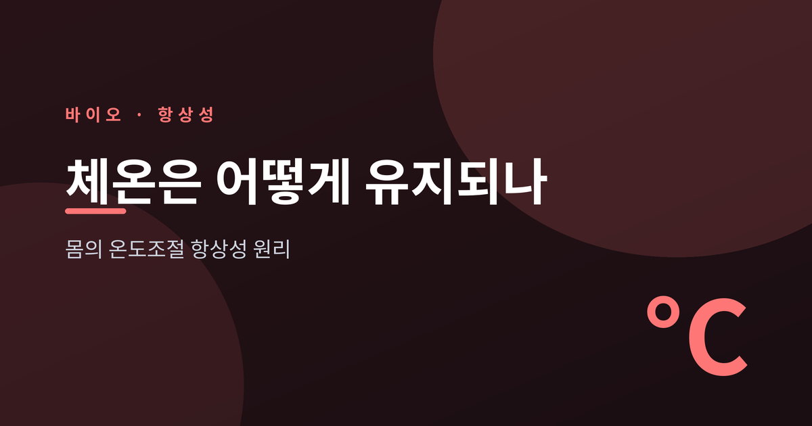
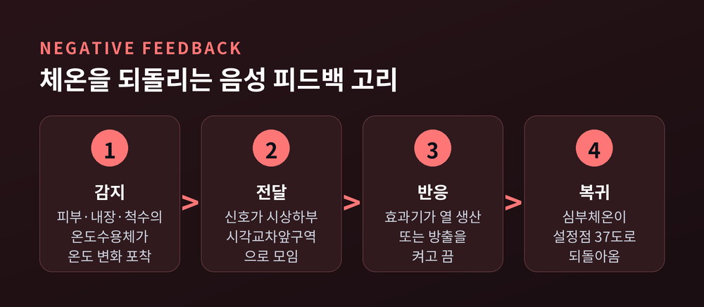
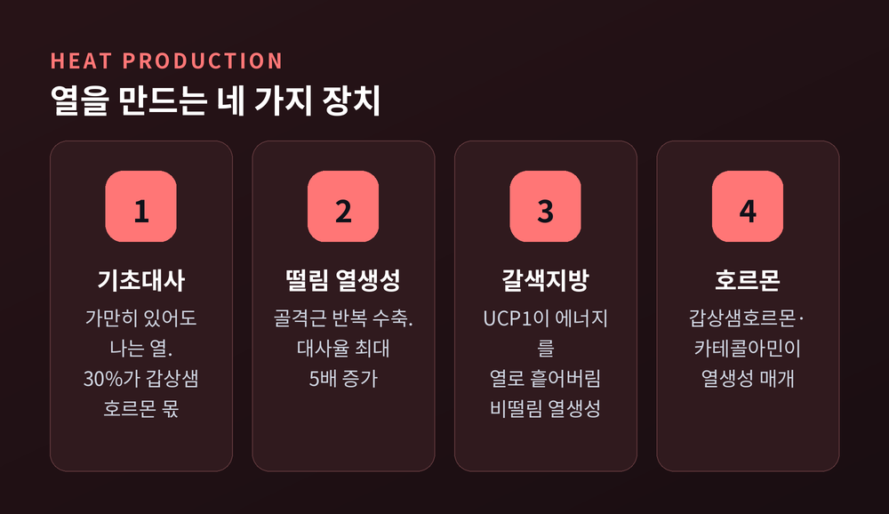
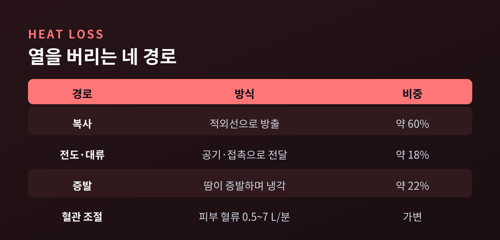
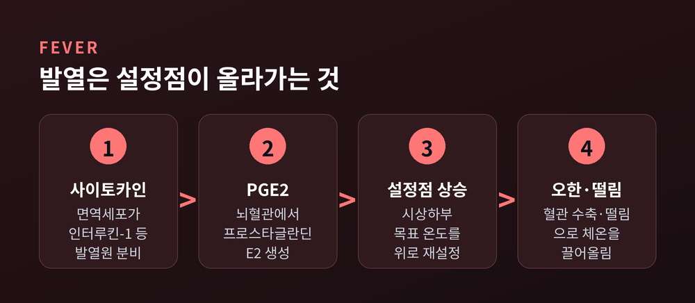
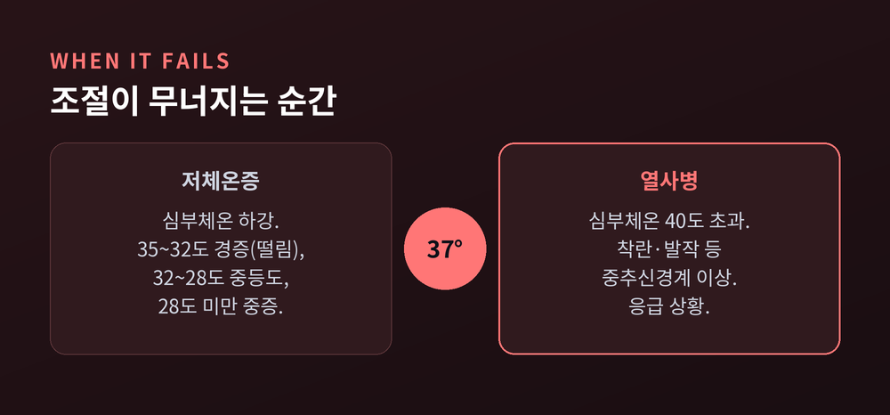

한여름 땡볕에서도, 한겨울 칼바람 속에서도 우리 몸속 온도는 거의 변하지 않습니다. 이번 글에서는 몸이 어떻게 체온을 좁은 범위 안에 붙들어 두는지, 그 온도조절 항상성의 원리를 정리해 보겠습니다. 시상하부의 설정점부터 열 생산과 방출, 발열, 그리고 체온조절이 무너지는 순간까지 차례로 살펴봅니다.

흔히 말하는 36.5도는 피부 표면에서 잰 값입니다. 몸속 깊은 곳의 심부체온은 대략 37도, 정확히는 37 ± 0.5도 범위에서 움직입니다.
이 온도를 관리하는 중추가 뇌 아래쪽 시상하부입니다. 그중에서도 시각교차앞구역이라는 작은 부위가 몸의 온도조절기 역할을 합니다.
여기에는 목표 온도가 정해져 있습니다. 이를 설정점이라고 부릅니다. 집 안 보일러의 희망 온도를 떠올리시면 됩니다.
작동 방식은 음성 피드백입니다. 온도가 설정점에서 벗어나면, 그 변화를 감지해 반대 방향으로 되돌립니다. 내장과 척수, 시상하부 자체에 있는 중추 온도수용체가 심부 온도를 감시하고, 피부의 수용체가 바깥 온도를 읽습니다. 이 신호가 모두 시상하부로 모입니다.
시상하부는 모인 정보를 종합해 판단합니다. 심부가 목표보다 낮으면 열을 만들고 아끼는 반응을, 높으면 열을 버리는 반응을 켭니다. 설정점보다 조금이라도 벗어나면 되도록 빨리 원래 값으로 끌어오는 것이 이 고리의 목적입니다.
정상 심부체온은 하나의 고정된 숫자가 아닙니다. 사람마다, 측정 부위와 하루 중 시간대에 따라 대략 36도에서 37.5도 사이를 오갑니다. 대개 새벽에 가장 낮고 늦은 오후에 가장 높습니다.

추위 앞에서 몸은 열을 더 만들어야 합니다. 방법은 하나가 아닙니다.
첫째, 기초대사입니다. 가만히 있어도 세포가 대사하며 열을 냅니다. 이 기초 열의 최소 30퍼센트는 갑상샘호르몬에 기댑니다.
둘째, 떨림 열생성입니다. 추위의 1차 방어선입니다. 골격근이 잘게 반복 수축하며 열을 냅니다. 이때 안정 대사율이 최대 다섯 배까지 올라갑니다.
셋째, 갈색지방의 비떨림 열생성입니다. 신생아와 소형 포유류에서 특히 중요합니다. 갈색지방 세포의 미토콘드리아 안쪽 막에는 UCP1이라는 단백질이 있습니다. 이 단백질은 양성자가 막을 새어 나가게 해서, 원래 에너지 저장(ATP)에 쓰일 힘을 그대로 열로 흩어버립니다. 말하자면 발전기를 돌리지 않고 연료를 태워 난방만 하는 셈입니다.
넷째, 호르몬입니다. 갑상샘호르몬과 카테콜아민이 열생성을 매개합니다. 갑상샘호르몬은 교감신경의 노르에피네프린 신호를 강화해, 열을 내는 효소들의 활성을 끌어올립니다.
이 장치들은 따로 놀지 않습니다. 추위에 노출되면 시상하부가 근육 떨림과 갈색지방 열생성, 심박수 증가를 한꺼번에 구동합니다. 추위에 오래 적응하면 교감신경이 갈색지방을 더 키우고, 미토콘드리아와 UCP1의 양도 늘어납니다. 몸이 스스로 난방 설비를 늘리는 셈입니다. 다만 UCP1이 없어도 작동하는 다른 열생성 경로가 있다는 연구도 있어, 갈색지방의 열생성이 UCP1 하나로만 설명되지는 않습니다.

반대로 더울 때는 열을 밖으로 내보내야 합니다. 크게 네 경로가 있습니다.
가장 큰 비중은 복사입니다. 몸이 적외선 형태로 열을 내보내며, 전체의 약 60퍼센트를 차지합니다. 공기를 통한 전도와 대류가 약 15퍼센트, 그리고 땀의 증발이 약 22퍼센트를 담당합니다.
피부 혈관도 조절 장치입니다. 더우면 혈관을 넓혀 피부로 피를 많이 보냅니다. 피부 혈류는 안정 시 분당 0.5리터에서 열 스트레스 상황에서는 분당 7리터까지 늘어납니다. 반대로 추우면 혈관을 조여 표면으로 새는 열을 줄이고 심부를 지킵니다.
땀은 마지막 카드입니다. 성인은 시간당 약 1리터, 극한 상황에서는 짧게 시간당 4리터까지 땀을 흘릴 수 있습니다. 땀 1그램이 증발할 때마다 약 0.58킬로칼로리의 열을 빼앗아갑니다.
여기에 함정이 있습니다. 땀은 증발해야 열을 가져갑니다. 습도가 높으면 땀이 흘러내리기만 하고 증발하지 못합니다. 그래서 무덥고 습한 날이 유난히 견디기 힘든 것입니다.
열 방출 비율도 고정된 값이 아닙니다. 60퍼센트, 22퍼센트 같은 숫자는 대표적인 조건에서의 대략치일 뿐, 기온과 습도, 바람, 옷차림에 따라 크게 달라집니다. 찬물에 몸을 담그면 전도로 빠져나가는 열이 급격히 늘고, 서늘한 바람이 불면 대류가 커집니다. 몸은 그 상황에 맞춰 어느 경로를 열고 닫을지 매 순간 다시 계산합니다.

감기에 걸려 열이 나면, 몸의 온도조절이 망가진 것처럼 보입니다. 사실은 반대입니다.
발열은 설정점 자체가 위로 올라간 상태입니다. 온도계가 고장 난 게 아니라, 희망 온도를 38도, 39도로 다시 맞춰 놓은 것입니다.
순서는 이렇습니다. 세균 같은 침입자가 들어오면 대식세포 같은 면역세포가 사이토카인을 내보냅니다. 이 물질을 내인성 발열원이라 부르며, 그중 인터루킨-1이 대표 선수입니다. 이 신호가 뇌혈관 세포를 자극해 프로스타글란딘 E2를 만들게 하고, 이 물질이 시상하부의 설정점을 끌어올립니다.
이제 몸은 새 목표를 향해 달립니다. 혈관을 조이고 근육을 떨어 열을 올립니다. 열이 오르는 초반에 오히려 오한이 들고 이불을 끌어안게 되는 이유가 여기 있습니다. 실제 체온은 높은데도, 몸은 아직 춥다고 느끼는 것입니다.
반대로 열이 내릴 때는 설정점이 원래 값으로 돌아옵니다. 그러면 몸은 이제 너무 덥다고 판단해 혈관을 넓히고 땀을 냅니다. 해열제가 프로스타글란딘 생성을 억제해 설정점을 다시 낮추는 방향으로 작용한다고 알려져 있습니다.

항상성에도 한계가 있습니다. 방어 능력을 넘어서면 심부체온이 무너집니다.
추위 쪽이 저체온증입니다. 심부체온 32에서 35도는 경증으로, 몸이 떨리고 판단력이 흐려집니다. 28에서 32도는 중등도로, 여기서는 역설적으로 떨림이 멈추고 무기력해집니다. 28도 아래로 떨어지면 중증이며, 의식과 호흡, 맥박이 위태로워집니다.
더위 쪽이 열사병입니다. 심부체온이 보통 40도를 넘고, 착란이나 발작 같은 중추신경계 이상이 함께 나타납니다. 뜨겁고 건조한 피부가 특징이지만, 반대로 심하게 땀을 흘리기도 합니다. 둘 다 응급 상황이며 지체 없는 처치가 필요합니다.

정리하면 이렇습니다. 우리 몸은 설정점 하나를 기준으로, 열을 만들고 버리는 장치를 쉼 없이 여닫으며 균형을 지킵니다. 가만히 있을 때도, 추위와 더위 앞에서도, 이 조율은 멈추지 않습니다.
그래서 평범한 36.5도는 사실 가장 정교한 균형의 결과입니다.
“체온이 일정하다는 것은, 몸이 매 순간 온도와 싸워 이기고 있다는 뜻입니다.”
오늘 별 탈 없이 지나간 하루의 체온도, 그 조용한 균형이 지켜낸 것입니다.